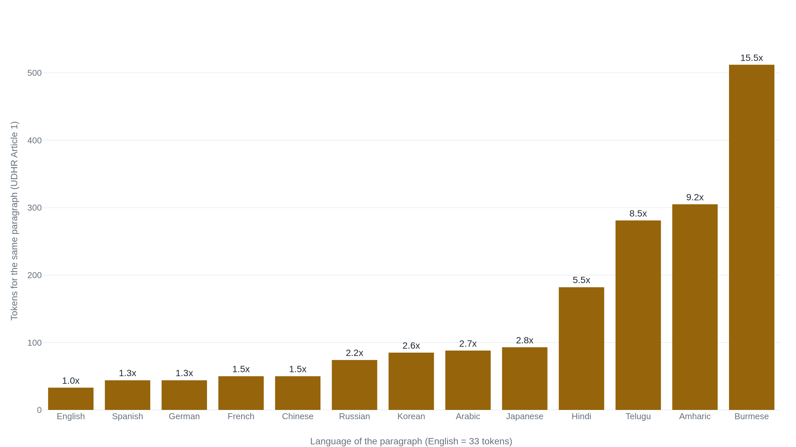

GPT-4 answers the same exam 23 points worse in Telugu than in English
The model saw far less of almost every other language, and the tokenizer splits the same sentence into as many as 15 times more tokens in the hardest of them.
Why this matters
Ask a chatbot a hard question in English and it is sharp. Ask the same question in Telugu, Amharic, or Burmese and the answers get vaguer and more error-prone, and the bill for asking goes up. Hundreds of millions of people meet these tools this way, in a second language or a non-Latin script. Work back from that experience and it resolves into two parts of the system: the text the model learned from, and the tokenizer that cuts each message into the units it reads. Knowing how those two parts behave, you can predict which languages come out worst, and separate the two explanations you will hear for why.
- 01
- A transformer never reads the letters in strawberry: what a tokenizer is and how its table of pieces gets built.
- 02
- A model can recognize strawberry's letters and still miscount them: the same tokenizer, biting a task you would expect to be easy.
The same questions, 85% in English and 62% in Telugu
OpenAI took MMLU, a 57-subject multiple-choice exam, translated its questions into dozens of languages with a commercial translation service, and ran GPT-4 on each. In English the model scored 85.5%. The same questions in Spanish cost it a point and a half; in Arabic, five and a half; in Bengali, twelve. In Telugu the score fell to 62.0%.1 One model, one exam, the questions matched item for item, and 23 points of accuracy went missing between the first language and the last.
The questions were machine-translated, and OpenAI says as much. Some translations drop information the model needs; others keep English proper nouns that make an item easier. So part of the gap comes from the translation, and only the rest from how the model handles the language.1 And the same chart reads as progress. GPT-4 in most of these languages beats the English scores of the models just before it.1 The gap is real, and it is shrinking, both at once.
The cost moves too. Billing runs per token, and the same request in these languages is broken into far more tokens. So a user in Andhra Pradesh can pay about five times what an English speaker in the United States pays for equivalent use of the model.2 A worse answer and a larger bill, for the same message.
Two parts of the system decide how a language comes out. One is the training corpus, the text the model learned from. The other is the tokenizer, which cuts every message into the small pieces the model actually reads. Take them in that order. The corpus sets how much the model ever saw of a language; the tokenizer sets how much of your context and your money each sentence spends.
The tokenizer bills every other language in more tokens
The tokenizer is a fixed table of text pieces, learned once, mostly from English-heavy text. A sequence that turns up often in that text earns its own piece; a rare one is spelled out from smaller fragments. Because the table was fit mostly on English, English words tend to land in one or two pieces, and text in a language the table barely saw is broken into many.
You can measure this yourself. Take Article 1 of the Universal Declaration of Human Rights, which has an official translation in hundreds of languages, and run each through cl100k_base, the tokenizer ChatGPT and GPT-4 use. In English the paragraph is 33 tokens. In Spanish it is 44, in Russian 74, in Arabic 88. In Hindi it is 182, in Telugu 281, and in Burmese 512, which is 15.5 times the English count for the same sentence.6 Read as characters per token, English packs 5.15 characters into each token and Amharic 0.34, so on the scripts the table was least fitted to, the tokenizer is working almost one byte at a time.6

Why does a script fragment so hard? Petrov and colleagues trace one word. In Shan, spoken in Myanmar, the word for "you" is a single written character built from a consonant and three marks, which Unicode stores as four separate codepoints. The English-trained table has no piece for any of them, so it emits nine tokens where English "you" is one.7 The same paragraph, the same meaning, several times the pieces to carry it.
Two things follow, and both land on the same speakers. First, the model has a fixed context window measured in tokens. A Burmese user therefore fits a fraction as much text into one request as an English user does, and long inputs overflow sooner.2 Second, the commercial APIs charge per token, so the Telugu or Amharic user pays for the extra pieces. Ahia and colleagues found that prompting plus generation cost up to four times more in those languages than in English for the same task. They estimate the Andhra Pradesh user paying about five times an American's price for equivalent use.2 Petrov's group put the general penalty at a cost of at least 2.5 times, latency about twice as long, and an order of magnitude less usable context for the worst-served languages.7
It is tempting to read this off the script, as if Telugu or Burmese characters were simply expensive to write down. They are not. The premium is a property of what the tokenizer was trained on, and it moves when you retrain. MuRIL, a tokenizer built for Indian languages, encodes Telugu at 1.21 times English, and most Indic languages within about 1.06 to 1.26 times, against the fivefold and more those same languages pay under the English-centric table.7 Same script, different training, most of the tax gone.
Nobody can yet split the blame between the two causes
Two parts of this are settled. That most languages are underrepresented in training text is not in dispute, and neither is the token tax. A 2025 study ran the same tokenizer across more than 200 languages. It still finds non-Latin and morphologically complex languages paying three to five times the English tokenization cost, so the amplifier is current and not an artifact of one aging tokenizer.8 The pattern is well enough known that developer tutorials now warn engineers a sentence that is four or five tokens in English can run to fifteen or twenty in Hindi, Thai, or Burmese.9
What is not settled is how much of the gap each cause owns. The MEGA authors measured both against performance and declined to rank them. Tokenizer fragmentation correlates with worse scores, and training-data size correlates with better ones. The two also correlate with each other, and a correlation across a handful of tasks is not proof that either one causes the gap.5 The French-and-Japanese case is why data goes first: there the data differed and the tokenization did not, and the data won. But no source hands over a clean percentage, and Ahia's group cautions that even the token disparity is not always downstream of the data share, and may depend in part on features of the script itself.2 Anyone who tells you it is 70% data and 30% tokenizer is making the numbers up.
And the gap is closing without being closed. GPT-4 bridges much of the distance older models left, which is the progress reading of that first exam. Yet the within-model gap remains. On the lowest-resource non-Latin languages a small model fine-tuned for the language still beats GPT-4, and translating the input into English first is often the best move available.5 Larger multilingual models and better-fitted tokenizers have narrowed the gap. Neither has closed it.
The takeaway
The worst-served languages are the ones that are both rare in the training text and badly fitted by the tokenizer. Those two usually arrive together: a language with little text online tends to have a script the English-built tokenizer never learned to pack. That is why the damage concentrates on low-resource, non-Latin languages like Telugu, Amharic, and Burmese, and why it shows up twice, once as a weaker answer and once as a larger bill. When you next see the gap explained, you can tell which mechanism the explanation is reaching for. A story about how much text the model saw is a data story, and the French-and-Japanese split is its evidence. A story about how a sentence is chopped into tokens is a tokenizer story, and the 33-to-512 count is its evidence. The honest version keeps both, puts the data first, and admits that nobody can yet say by how much.
- 01
- Ahia et al., "Do All Languages Cost the Same?": the token tax measured as cost and utility across 22 languages on a named model.
- 02
- Petrov et al., "Language Model Tokenizers Introduce Unfairness Between Languages": the per-language multipliers, and how much a retrained tokenizer recovers.
Sources
- OpenAI · GPT-4 Technical Report
- Ahia et al. · Do All Languages Cost the Same?
- Brown et al. · Language Models are Few-Shot Learners (GPT-3)
- Common Crawl · Language statistics
- Ahuja et al. · MEGA: Multilingual Evaluation of Generative AI
- OpenAI · tiktoken (cl100k_base)
- Petrov et al. · Language Model Tokenizers Introduce Unfairness Between Languages
- Teklehaymanot and Nejdl · Tokenization Disparities as Infrastructure Bias
- ai-tldr.dev · Tokenization in other languages